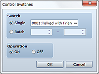
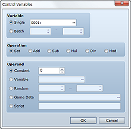
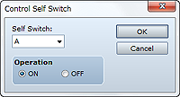
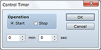

Changes the switch value (on/off).
Specify the switch to change. To operate a single switch, select Single and specify the target switch. To change the values of two or more switches with consecutive numbers, select Batch and then specify the switch number range.
Specify the value (on/off) to assign to the switch.

Changes a value stored in a variable.
Specify the variable for which you want to change the value. To change a single variable, select Single and specify the target variable. To change the values of two or more variables with consecutive numbers, select Batch and then specify the variable number range.
Specify the calculation method for the value. (See "Notes" below.) The value of the variable specified by Variable will change to a value calculated based on the value of the pre-operation variable, the calculation method, and the value of the operand.
Specify the value to use in the calculation of Operation. (See "Notes" below.)
• The following table shows the calculation methods that you can specify in Operation.
| Set | Assigns an operand value (no calculation). |
|---|---|
| Add | Assigns the value calculated by adding the value of the pre-operation variable to the operand. |
| Sub | Assigns the value calculated by subtracting the operand from the value of the pre-operation variable. |
| Mul | Assigns the value calculated by multiplying the value of the pre-operation variable by the operand. |
| Div | Assigns the value calculated by dividing the value of the pre-operation variable by the operand. |
| Mod | Assigns the remainder calculated by dividing the value of the pre-operation variable by the operand. |
• The following table shows the values that you can specify in Operand.
| Constant | Applies a fixed value. Specify the value in the field to the right. |
|---|---|
| Variable | Uses the value of a variable. Specify the variable to look up. |
| Random | Uses a random value. Specify the range for generating the random value between -99999999 and 99999999. |
| Game Data | Applies values relating to the current game play situation. In the dialog box that appears when you click ..., specify the information to look up. (See the table below.) |
| Script | Applies the values of evaluation results of the Ruby script that was entered. |
• If you specified Game Data in Operand, select one of the following for the operand data.
| Item | Applies the quantity of the specified item. | ||||||||||||||||||||
|---|---|---|---|---|---|---|---|---|---|---|---|---|---|---|---|---|---|---|---|---|---|
| Weapon | Applies the quantity of the specified weapon. | ||||||||||||||||||||
| Armor | Applies the quantity of the specified armor. | ||||||||||||||||||||
| Actor | Applies the value of an actor's parameter (HP, MP, or other parameter). Specify the target actor and parameter. This setting is valid only during map movement. | ||||||||||||||||||||
| Enemy | Applies the value of an enemy's parameter (HP, MP, or other parameter). Specify the target enemy and parameter. This setting is valid only during battles. | ||||||||||||||||||||
| Character | Applies the display position of the player/map event or the value related to a state. Specify one of the following :
|

Controls the value of a self switch. Cannot be used in battle events.
Specify the target self switch (A through D).
Specify the value (on/off) to assign to the switch.
• Cannot be used in battle events.

Starts/stops a timer that keeps track of a time limit (time remaining). When the timer starts, the remaining time will be automatically displayed at the top right part of the screen. The timer countdown will pause while a menu is displayed. To branch processing depending on a timer's remaining time, use an event command such as Conditional Branch.
To start keeping track of a time limit, specify Start, and to stop, specify Stop.
If starting the timer, specify the time limit in minutes and seconds (00:00 to 99:59).